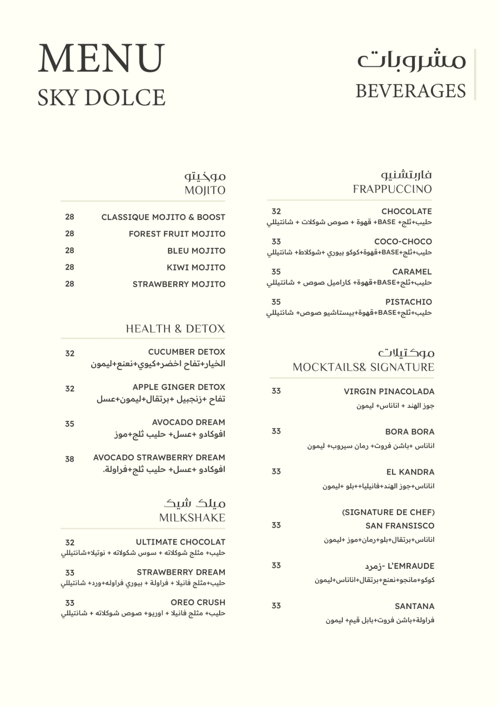

DOLCE SKY
حرصًا على راحتكم وخصوصية أجواء المكان، نود إعلامكم بأن يُمنع اصطحاب الأطفال دون عمر 12 سنة
كما نحيطكم علمًا بأن المطعم داخلي فقط ولا تتوفر طلبات خارجية
شكرًا لتفهّمكم، ونسعد باستقبالكم في Dolce Sky



DOLCE SKY
قيّم تجربة دولتشي سكاي
ملاحظاتكم تساهم في الحفاظ على مستوى الخدمة والجودة في Dolce Sky
السؤال 1 من 5
تم الإرسال بنجاح
شكراً لمشاركتك
وصلت ملاحظاتك إلى إدارة Dolce Sky مباشرة، ونعمل دائماً على تطوير تجربتكم.